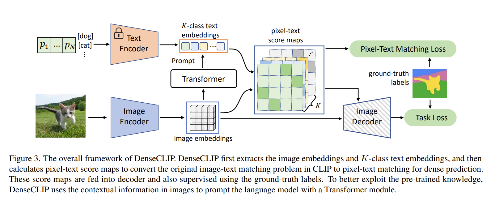

Paper: DenseCLIP: Language-Guided Dense Prediction with Context-Aware Promptin
Extends CLIP to dense prediction tasks (tasks in which prediction is made for every pixel (or region) in an image, instead of a single global prediction. e.g.: image segmentation). The primary hurdle lies in bridging the gap between the instance-level image-text matching objective of CLIP and the pixel-level prediction required for dense tasks. Simply utilizing the image encoder of CLIP as a pre-trained backbone overlooks the valuable language priors learned by the text encoder. Furthermore, the inherent cost and complexity of obtaining pixel-level annotations for dense prediction tasks make effective pre-training even more critical. Therefore, the core problem addressed by DenseCLIP is how to effectively transfer the knowledge acquired through large-scale image-text contrastive learning to dense prediction models, leveraging both visual and textual information to overcome the limitations of relying solely on image-based pre-training or labor-intensive pixel-level annotations.
DenseCLIP tackles the challenge of adapting image-text pre-training to dense prediction by reframing the problem from image-text matching to pixel-text matching.
The core idea is to create a pixel-text score map that reflects the correspondence between image pixels and textual descriptions. The method leverages a "language-compatible"
feature map extracted from the last layer of the CLIP image encoder. Although standard CLIP training typically uses the global feature from the image encoder, DenseCLIP
recognizes that earlier layers retain spatial information and can be aligned with language features.
To achieve pixel-text matching, class names are used to create text prompts (e.g., "a photo of a [class name]"). These prompts are fed into the CLIP text encoder to obtain
text embeddings. The pixel-text score maps are then computed by calculating the similarity (using cosine similarity after normalization) between the language-compatible
image feature map and these text embeddings. These score maps, which have a lower spatial resolution, essentially represent a coarse segmentation based on textual cues.
"Think of the pixel-text score maps as rough, text-based "hints" for where objects are in the image. DenseCLIP uses these hints in two main ways to train its models for tasks
like spotting objects or outlining things in a picture:

First, they serve as the target for an auxiliary segmentation loss, encouraging the model to align its predictions with text-derived segmentation.
Second, these score maps are concatenated with existing feature maps, directly incorporating language-based information into the visual representation.
This modified feature representation is then compatible with standard dense prediction architectures. Image context is used to refine text embeddings, improving
the accuracy of pixel-text matching.
The framework is model-agnostic, applicable to diverse dense prediction models and backbones, including CLIP and ImageNet pre-trained models.
This blog is not academic in nature, and the content is taken from a lot of sources. The primary source of information are the CoOp and CoCoOp papers themselves. Apart from them the following sources were used (non-exhaustive list):